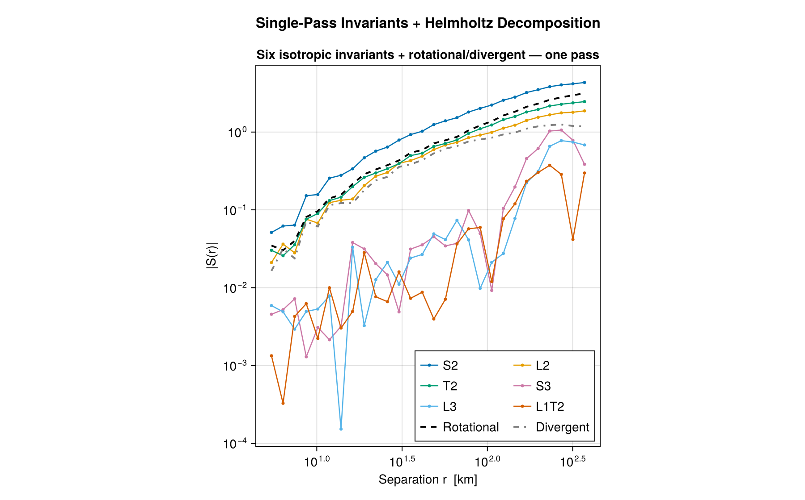
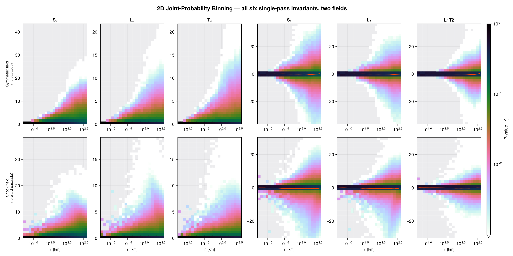
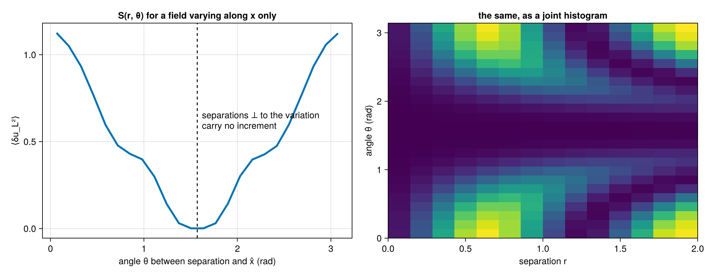
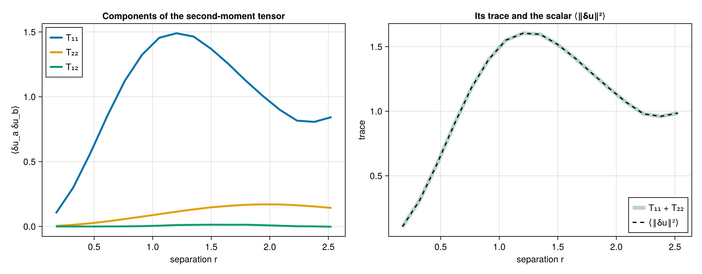
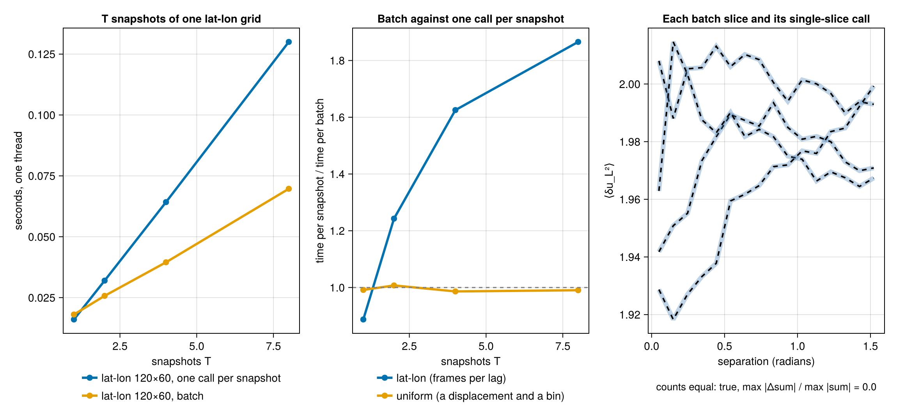
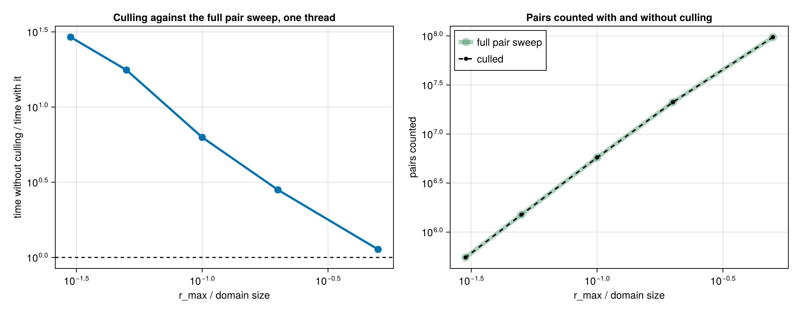
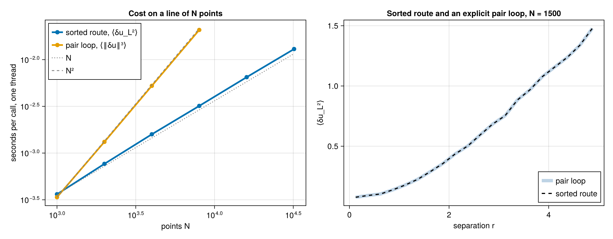
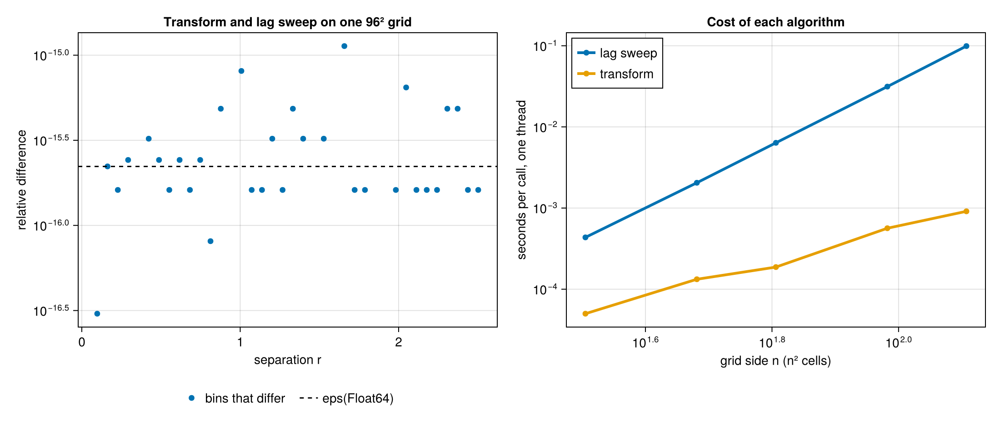
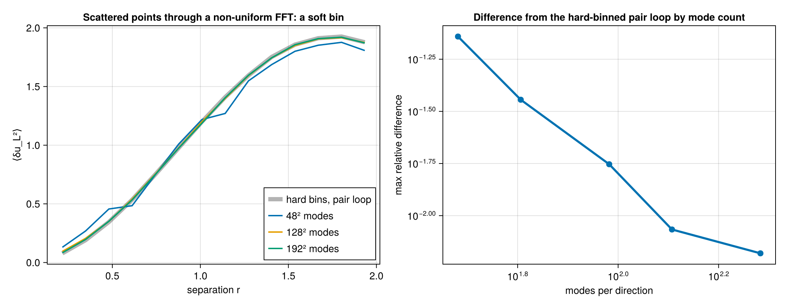

Calculations
Each section names a calculation, shows a small call on the serial backend and a figure of the same calculation on a larger field. The figures are drawn by docs/generate_assets/generate_assets.jl and generate_feature_figures.jl.
using Random: Random
using StructureFunctions: StructureFunctions as SF, Calculations as SFC, StructureFunctionTypes as SFT
using ComputationalBackends: SerialBackend
rng = Random.MersenneTwister(12)
x = Random.rand(rng, 2, 400) # (coordinate, point)
u = Random.randn(rng, 2, 400) # (component, point)
bins = range(0.0, 1.0; length = 11)Six invariants in one pass
calculate_structure_functions_single_pass forms each pair's geometry once and accumulates S2, L2, T2, S3, L3 and L1T2 together. For point fields the result also carries the two-dimensional Helmholtz split into rotational and divergent parts.
res = SFC.calculate_structure_functions_single_pass(x, u, bins, SF.StructureFunction; backend = SerialBackend())
keys(res)(:S2, :L2, :T2, :S3, :L3, :L1T2, :helmholtz)
Joint histograms
With a second set of edges the result is a histogram over separation and a second axis. By default the second axis is the operator's value, which gives the conditional distribution P(value | r).
value_bins = range(-3.0, 3.0; length = 13)
joint = SFC.calculate_structure_function(SFT.L3SFType(), x, u, bins, value_bins; backend = SerialBackend())
size(joint.counts)(10, 12)
second_axis = SeparationAngleAxis(axis) bins the angle between the separation and axis, which gives the structure function resolved by direction, S(r, θ).
angles = range(-1e-3, π; length = 13)
directional = SFC.calculate_structure_function(SFT.L2SFType(), x, u, bins, angles;
second_axis = SFC.SeparationAngleAxis([1.0, 0.0]), backend = SerialBackend())
size(directional.counts)(10, 12)
Moment tensors
calculate_structure_function_tensor(Val(P), x, u, bins) accumulates the rank-P tensor ⟨δu_{i₁} ⋯ δu_{i_P}⟩ per separation bin. Its trace at P = 2 is the second-order structure function S2; its off-diagonal components carry the anisotropy that the trace averages over.
tensor = SFC.calculate_structure_function_tensor(Val(2), x, u, bins; backend = SerialBackend())
size(tensor.values)(2, 2, 10)
Batches of snapshots
A field with trailing axes, u of shape (D, N, T), is a batch: one histogram per snapshot over the same positions. Positions of shape (D, N, T) vary with the snapshot. A batch over shared positions forms each pair's geometry once for every snapshot.
snapshots = cat(u, 2 .* u; dims = 3)
batch = SFC.calculate_structure_function(SFT.S2SFType(), x, snapshots, bins; backend = SerialBackend())
size(batch.values)(10, 2)On a grid, calculate_structure_function_batch! does the same for snapshots of one grid, with the lag geometry (on a sphere, the geodesic frames and transport matrices) computed once for all of them.

Exact routes
Every route below returns the same pairs in the same bins as the direct pair loop; they differ in the work done.
Cell culling
A point list is sorted into cells no smaller than the largest separation, and only pairs in neighbouring cells are formed. culling = AutoCulling() (the default) culls when the cutoff is small against the extent of the points; AlwaysCulling() and NoCulling() fix the choice.
small = range(0.0, 0.1; length = 6)
culled = SFC.calculate_structure_function(SFT.L2SFType(), x, u, small, UInt32, SF.StructureFunctionSumsAndCounts;
culling = SFC.AlwaysCulling(), backend = SerialBackend())
full = SFC.calculate_structure_function(SFT.L2SFType(), x, u, small, UInt32, SF.StructureFunctionSumsAndCounts;
culling = SFC.NoCulling(), backend = SerialBackend())
@assert culled.counts == full.counts
The sorted line
For positions on a line and an operator polynomial in the increment, the points are sorted once and each bin's pairs are an index range, summed through prefix sums of the field's monomials. The pair loop is never formed; the call is the same.
x1 = reshape(sort(100 .* Random.rand(rng, 2000)), 1, :)
u1 = reshape(sin.(0.4 .* x1[1, :]) .+ 0.2 .* Random.randn(rng, 2000), 1, :)
line = SFC.calculate_structure_function(SFT.L2SFType(), x1, u1, range(0.0, 5.0; length = 21);
backend = SerialBackend())
line.values[1:4]4-element Vector{Float64}:
0.08489931505473627
0.0927590630130317
0.11032744314458368
0.13531444860485983
Grids: lag sweep and transform
On a grid with at least one uniform direction a lag is shared by every pair it separates. The lag sweep visits each lag once; for an operator polynomial in the increment, the transform evaluates every lag at once from cross-correlations of the field's masked monomials. AutoSpectralBackend() picks between them; DirectSumSpectralBackend() and FastFourierTransformSpectralBackend() fix the choice.
using FlowGeometries: FlowGeometries as FG
using SpectralBackends: SpectralBackends as SB
using FFTW: FFTW
n = 32
grid = FG.Grids.StructuredGrid(FG.Geometry.CartesianGeometry(), range(0.0, step = 1 / n, length = n),
range(0.0, step = 1 / n, length = n); topology = (FG.Grids.Periodic(), FG.Grids.Periodic()))
ug = Random.randn(rng, 2, n, n)
gbins = range(0.0, 0.5; length = 11)
sweep = SFC.calculate_structure_function(SFT.L2SFType(), grid, ug, gbins, SB.DirectSumSpectralBackend(),
UInt32, SF.StructureFunctionSumsAndCounts)
fft = SFC.calculate_structure_function(SFT.L2SFType(), grid, ug, gbins, SB.FastFourierTransformSpectralBackend(),
UInt32, SF.StructureFunctionSumsAndCounts)
@assert sweep.counts == fft.counts
maximum(abs, sweep.sums .- fft.sums) / maximum(abs, sweep.sums)2.8258557614382734e-16
Scattered points through a non-uniform FFT
ScatteredModesSchedule(x, r_max, modes) maps scattered points onto a periodic mode grid, and a non-uniform FFT provider (NonuniformFFTsSpectralBackend() with NonuniformFFTs, or FINUFFTSpectralBackend() with FINUFFT) evaluates every pair at once. The result is binned by the truncated kernel of the mode grid in place of hard bins; it converges to the hard-binned result as the mode count grows, and it is computed only when the tag is passed.
using NonuniformFFTs: NonuniformFFTs
s = SFC.ScatteredModesSchedule(x, 0.5, (128, 128))
soft = SFC.calculate_structure_function(SFT.L2SFType(), s, u, bins, SFC.NonuniformFFTsSpectralBackend(), Float64,
SF.StructureFunctionSumsAndCounts)